普林斯頓大學提出 Web World Models——
讓程式碼當骨架、AI 長肉，創造穩定又無限的互動世界
過去我們在建構數位世界時，只有兩個極端選擇：要嘛是傳統網站——穩定可靠但內容有限， 所有資料都必須事先存好；要嘛是完全由 AI 生成的世界——內容無限但很難控制， AI 經常產生不一致的幻覺。2025 年底，普林斯頓大學的研究團隊提出了一條優雅的中間路線： Web World Models（網頁世界模型，簡稱 WWM）。
這個想法聽起來很簡單，卻極其強大——讓程式碼負責維護世界的「物理定律」（座標、背包、遊戲規則）， 讓 AI 大型語言模型負責生成世界的「感知內容」（風景描述、NPC 對話、故事劇情）。 就像骨骼支撐著身體結構，而肌肉與皮膚賦予它生命力。
Language agents increasingly require persistent worlds in which they can act, remember, and learn. Existing approaches sit at two extremes: conventional web frameworks provide reliable but fixed contexts backed by databases, while fully generative world models aim for unlimited environments at the expense of controllability and practical engineering.
語言代理人越來越需要能在其中行動、記憶和學習的「持久世界」。 但現有方案處於兩個極端：傳統網路框架提供穩定但固定的環境（靠資料庫撐）， 而完全生成式的世界模型追求無限環境，卻犧牲了可控性與工程實用性。
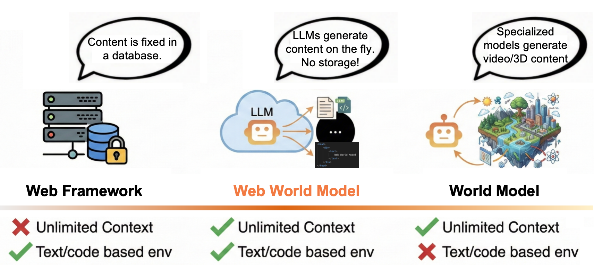
| 方案 | 類比 | 優點 | 缺點 |
|---|---|---|---|
| 傳統網頁框架 | 預蓋好的公寓大樓 | 結構穩固、不會倒塌 | 房間數量固定，不能憑空增加 |
| 純生成式模型 | 請 AI 畫師即興畫城市 | 想要什麼就畫什麼，無限大 | 今天畫的路可能明天就消失了 |
| WWM | 先搭鋼筋骨架，再請設計師裝潢 | 結構穩固 + 無限創意 | 需要仔細設計兩層的介面 |
WWM 的核心創新在於將世界狀態一分為二。每一個時間步的世界狀態 St 都由兩個部分組成：確定性的「物理層」和隨機性的「想像層」。
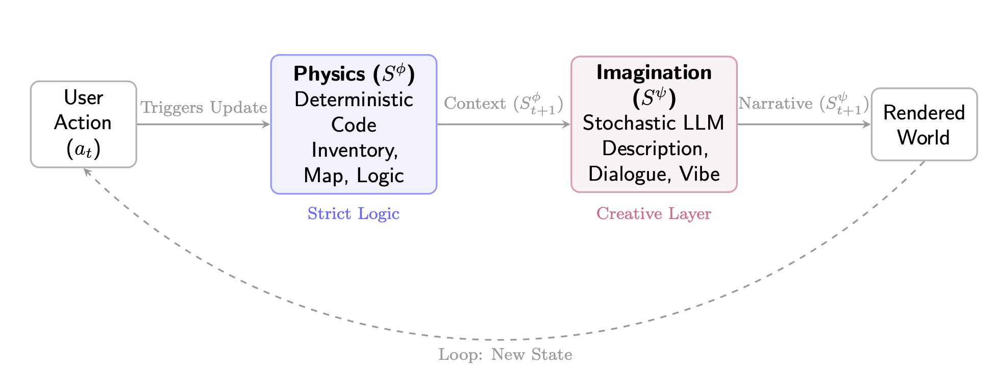
Sφ — 確定性，由程式碼控制
Sψ — 隨機性，由 LLM 生成
想像你在玩一款開放世界 RPG：
物理層保證你的血量不會突然從 70% 變成 200%；想像層讓每次造訪都能有不同的詩意描述。 骨架不變，靈魂常新。
論文從實作經驗中提煉出四條核心設計原則，指導如何正確建構 WWM。
硬約束（不變量）交給程式碼，軟創意（感知內容）交給 AI。 程式碼保證「你不能帶超過 10 件武器」，AI 決定「這把劍叫做月光斬，散發著淡藍色的光芒」。
用 TypeScript 的 interface/JSON Schema 作為兩層之間的「合約」。 LLM 必須輸出符合 schema 的 JSON，而非自由文字。 這從根本上消除了結構性幻覺。
將座標通過 hash 函數產生固定種子，讓 LLM 在同一地點生成相同內容。 這就是「物件恆常性」——你昨天在台北 101 看到的夜景， 明天再去還是一樣的。零儲存成本。
當 LLM 回應太慢或掛掉時，系統不會崩潰，而是自動切換到快取內容或模板生成。 這就是「保真度旋鈕」（Fidelity Slider）——品質可調但永不斷線。
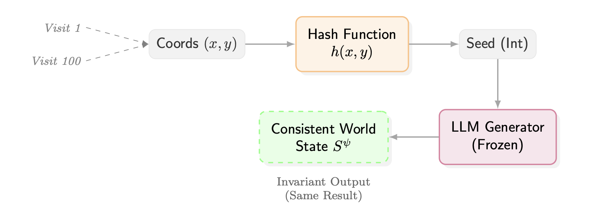
傳統作法：你要為每一個地點建一筆資料庫記錄。一個無限大的世界 = 無限大的資料庫 = 💸
WWM 作法：一個 hash 函數 + 一個 LLM = 無限地點，零儲存成本。 而且因為 hash 是確定性的，同一個座標永遠產出同一個種子， 所以 LLM 生成的結果也永遠一致。物件恆常性就這樣免費獲得了。
論文團隊用真實的 Web 技術棧（TypeScript + HTTP Streaming + Serverless） 實作了七個完整的 WWM 應用，展示這個架構的廣泛適用性。
靈感來自 Google Earth，但完全不需要資料庫。 使用者點擊地球上的任何座標，系統會即時生成該地點的旅遊指南—— 物理層根據經緯度推算出大陸、氣候、地形等屬性， 想像層的 LLM 據此產生主題、景點介紹和旅行路線。
例如：選擇肯亞奈洛比，系統會推算出「赤道、草原氣候」， 然後 LLM 生成「沙漠花開」主題的探險路線。
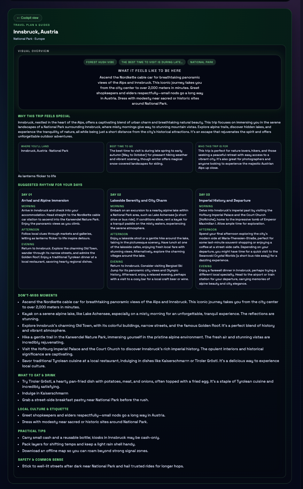
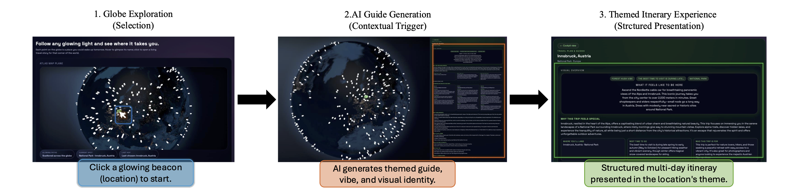
一個程序化生成的科幻宇宙。星系的佈局和恆星系統由確定性演算法決定， 使用者可以在星球間導航，接收由 LLM 生成的任務簡報、地形描述和敘事線索。
Hash 機制確保你第二次造訪同一顆星球時， 看到的描述和第一次完全一樣——物件恆常性在沒有任何資料庫的情況下實現。
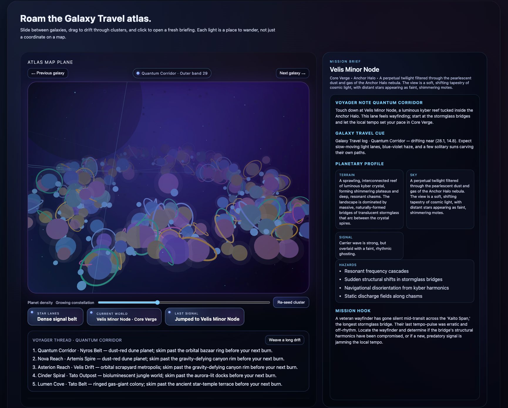
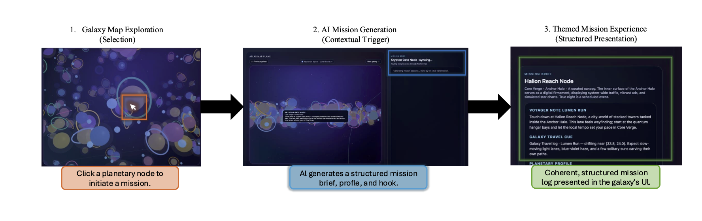
一款 Roguelike 風格的牌組構築遊戲。最特別的功能是「許願系統」（The Wish）—— 玩家可以用自然語言描述想要的卡牌，例如「一張能讓敵人自爆的火焰咒語」。
物理層定義了所有合法的卡牌效果函數（攻擊、防禦、回血等）， LLM 將自由描述轉換成符合規範的 JSON 物件，呼叫這些合法函數。 創意無限，規則不破。
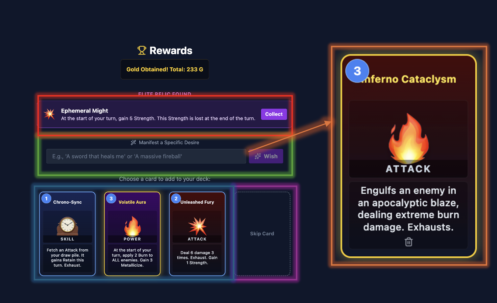
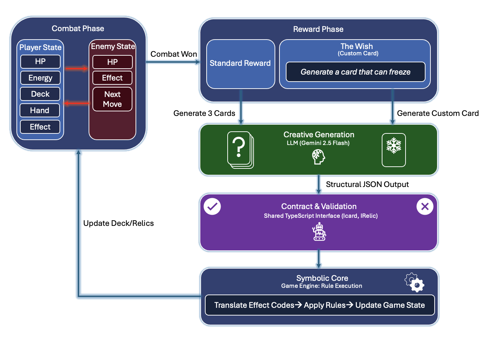
一個「落沙」模擬器，靈感來自經典的粉末遊戲。當兩種元素首次接觸時， 系統會呼叫 Gemini AI 即時產生化學反應規則——但必須在物理層定義的 元素類別（粉末、液體、氣體）約束下運作。
生成的反應會被快取重用，使得越玩越多、世界越豐富。 還有一個可選的「AI 監督員」會觀察畫布上的湧現行為。
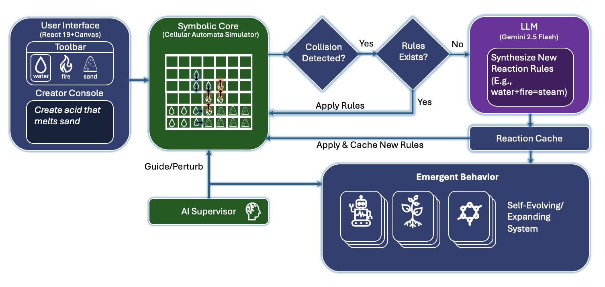
一個用 WebGL 渲染的互動式 3D 太陽系。使用者可以在軌道檢視、 飛行控制和行星表面漫步三種模式間切換。
「Cosmic Guide」旁白每 30 秒根據使用者的視角即時刷新教育性敘述。 當 API 不可用時，系統優雅降級到預先打包的描述文字， 保證體驗永不中斷。
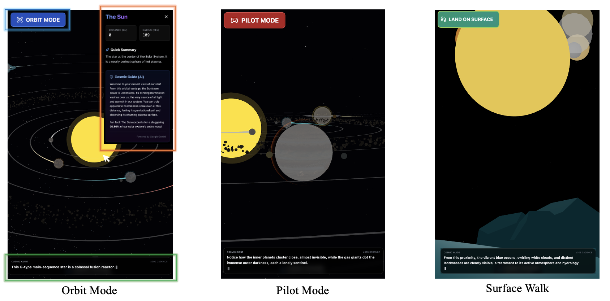
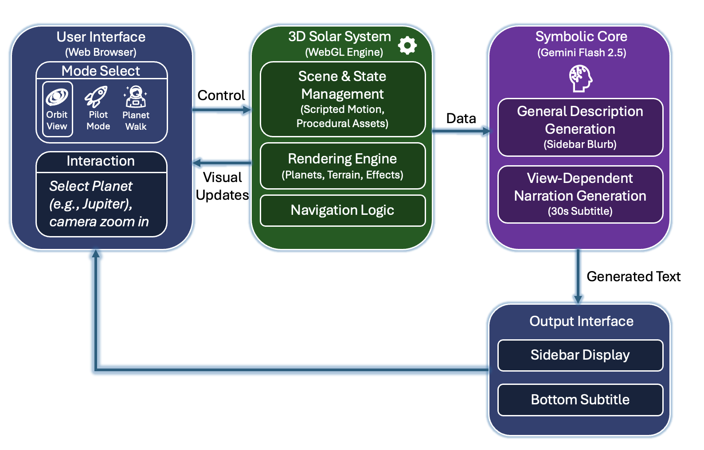
一個以知識為核心的 WWM，將開放網路視為無邊界的知識世界。 物理層負責搜尋、檢索和確定性 HTML 渲染， 想像層的 LLM 即時合成類 Wikipedia 的文章，包含結構化大綱和引用來源。
使用者可以對任何章節要求更深入的展開。
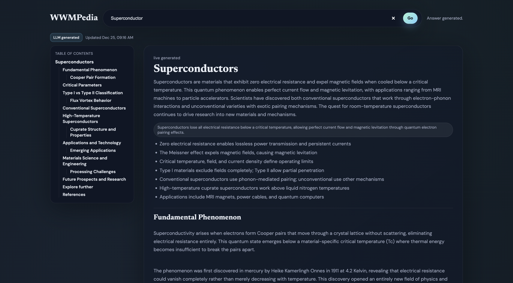
長篇生成式小說，介面風格（CSS 主題）和文學標籤（類型、語調、節奏） 共同構成一種精巧的「控制語言」。系統透過小型、型別化的狀態維持敘事連續性， LLM 則在風格約束下生成每一頁的內容。
你可以選擇「科幻 × 詩意 × 慢節奏」，然後開始閱讀一本只屬於你的小說。
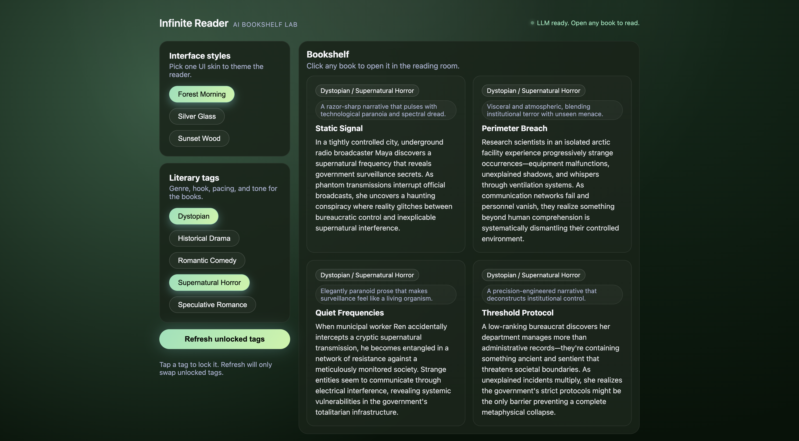
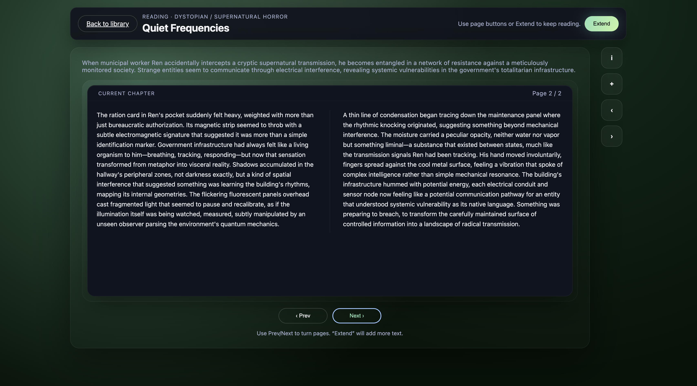
WWM 並非偶然選擇 Web 作為載體。論文指出，現代 Web 技術棧天然具備 建構世界模型所需的所有能力：
| Web 技術 | 在 WWM 中的角色 | 為什麼適合 |
|---|---|---|
| TypeScript | 型別化介面的合約語言 | 靜態型別 + JSON Schema = 防止 LLM 結構性幻覺 |
| HTTP Streaming | 即時傳遞生成內容 | LLM 一邊生成、使用者一邊看到，零等待感 |
| Serverless | 無限擴展的運算資源 | 不需要維護伺服器，用多少付多少 |
| WebGL / Canvas | 3D 渲染（Cosmic Voyager） | 瀏覽器內的 GPU 加速，無需安裝 |
| CSS Variables | 動態主題切換（Bookshelf） | LLM 可以透過修改 CSS 變數即時改變視覺風格 |
Our results suggest that web stacks themselves can serve as a scalable substrate for world models, enabling controllable yet open-ended environments for both human users and language agents.
我們的結果表明，Web 技術棧本身就可以作為世界模型的可擴展基底， 為人類使用者和語言代理人提供可控且開放的環境。
目前的 AI 代理人大多只能在靜態網頁或預設環境中測試。 WWM 提供了一種方法，讓研究者可以快速搭建無限大、可控、可重現的測試環境， 加速 Agent 的訓練與評估。
傳統遊戲需要大量美術和策劃人力來填充世界內容。 WWM 展示了一種可能：遊戲設計師只需定義規則（物理層）， AI 自動填充所有的感知內容（想像層）。 這可能徹底改變獨立遊戲和開放世界遊戲的開發模式。
WWM 本質上提出了一種新的軟體架構模式： 將系統分為確定性的「邏輯核心」和隨機性的「AI 表現層」。 這種思維不只適用於遊戲，也可以應用在客服系統、教育平台、創意工具等領域。